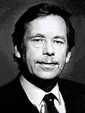
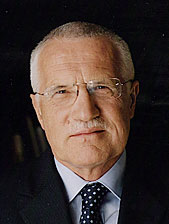
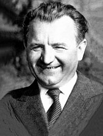
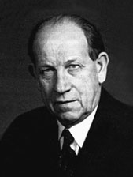
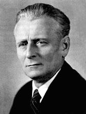
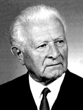
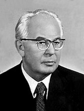
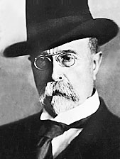
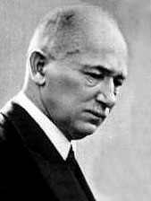
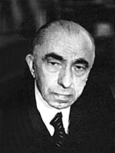

Naši prezidenti
1989 - 2018

Václav Havel

Václav Klaus
Miloš Zeman
1948 - 1989

Klement Gottwald

Antonín Zápotocký

Antonín Novotný

Ludvík Svoboda

Gustav Husák
1918 - 1948

Tomáš Garrigue Masaryk

Edvard Beneš

Emil Hácha
Prezident ČR